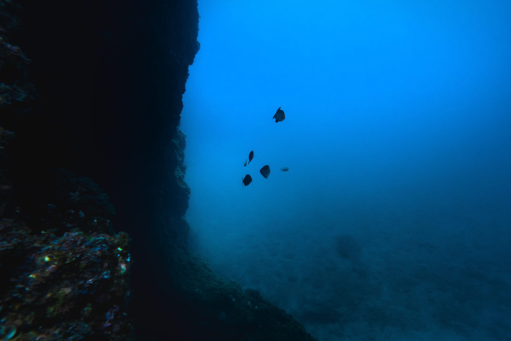
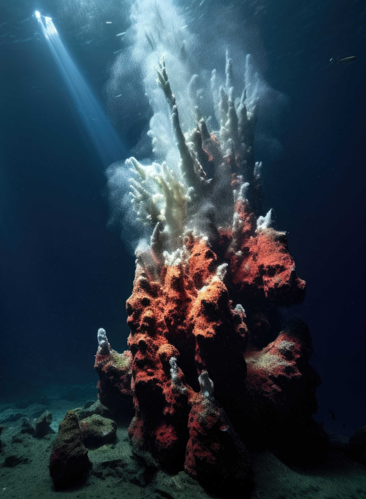

The ocean's depths, a cathedral of solitude, where the echoes of eons past resonate in the saline embrace. In the hushed corridors of this aqueous world, whispers of forgotten civilizations linger among ancient shipwrecks, their timeworn tales entwined with the haunting melody of the deep. Amidst the darkness, bioluminescent wonders paint the obsidian canvas, illuminating the unknown with ephemeral glimmers, a celestial ballet in the liquid cosmos. Here, in this abyssal sanctuary, dreams swim alongside elusive creatures, where the heart finds a symphony in the rhythm of gentle tides, and the spirit discovers a boundless expanse of introspection and awe. The deep ocean, an ethereal enigma that cradles the secrets of the universe, an eternal enchanter of the soul.

